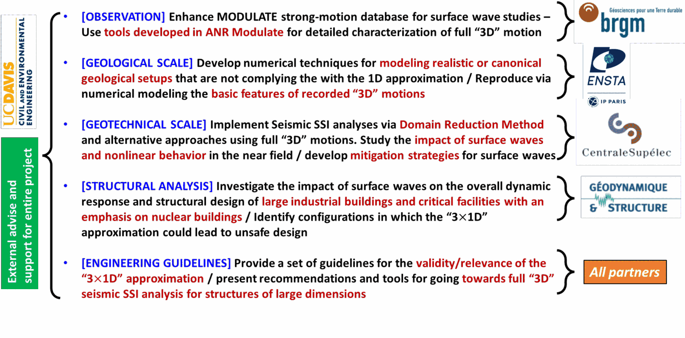

About IMSURF
IM-SURF is a research project funded by the French National Research Agency (ANR), running from 01/10/2024 to 30/09/2028. It studies the impact and mitigation of seismic surface waves (Rayleigh, Love) on large 3D structures, moving engineering practice beyond the conventional 1D approximation toward full 3D dynamic soil-structure interaction analysis — and toward practical guidelines for when that matters.
Read more: Context · Originality and Relevance · Objectives · Impacts and Benefits
Consortium
The project brings together three public institutions (BRGM, CentraleSupélec, ENSTA), a commercial partner (GDS), and an international institution (UC-Davis)
About each partner: GDS (coordinator) · BRGM · CentraleSupélec · ENSTA Paris · UC Davis
Program
The proposed project is divided into 5 Work Packages (WP). Each WP contains tasks with detailed actions, milestones and deliverables.
Each WP has a partner as responsible Leader, who coordinates the tasks of the WP.
Working Packages
- WP1 - Project Management and Dissemination of results
- WP2 - Enrichment of existing strong motion databases for surface wave studies
- WP3 - Numerical techniques for obtaining full 3D wave regimes from the geological to the geotechnical scale
- WP4 - Development of numerical techniques for seismic SSI calculations with complete wave regime and presence of strong nonlinearities in the near field
- WP5 - Seismic performance of structures of large dimensions subjected to the incidence of “3D” motions with surface waves
The following figure presents the global flowchart of IM-SURF project with the role of each partner of the research consortium.

Publications
Read our latest scientific outputs, including peer-reviewed papers and conference presentations.
Different strategies are pursued in order to ensure a rapid transfer of the results, in particular to public authorities and to the scientific and engineering communities. Specifically:
- Publications of project's reports
- Progress meetings during the project
- Presentations and sessions in national and international conferences
- Publications in scientific international journals
Project Video: Preliminary Modeling of P-wave Propagation in Homogeneous Soil
Stage GDS: ISS modeling for large civil engineering structures.
By: Tanguy Ramanantsoavina · more videos
Contact
For more information about the IMSURF project, please contact us at:
Email: charisis.chatzigogos@geodynamique.com
Project Coordinator: Dr. Charisis Chatzigogos
Company: Géodynamique et Structures